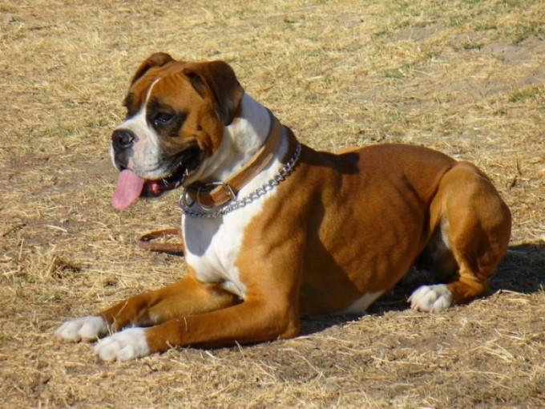

|  | DOG Levrand, es un Boxer Aleman "Leonado", nacio en la provincia de Buenos Aires, en Virrey del Pino hace ya 11 años el viejito, lo llamo con AMOR, es un muy amable SER, sabe cuando estoy alegre, triste, cansado. |
| Las características físicas del bóxer alemán son: hocico ligeramente más pequeño, muslos amplios, tamaño de huesos más grandes que el bóxer americano y patas pequeñas con nudillos altos. EL bóxer alemán es más corpulento que el americano, de pecho ancho y cabeza más aplanada. Por otro lado, el color de bóxer europeo presenta diferentes tonos rojizos y también manchas blancas. Finamente, en Europa es muy utilizado como perro de vigilancia y de trabajo aunque en su mayoría son usados como perros de compañía. |